今天试着开始做一些ctf的题目，因为最近刚好在学渗透，所以试着做了一下web类，做到一题sql注入题，按照之前学习的盲注方法，一开始先用/?id=1
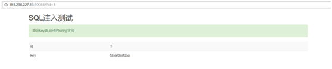
紧接着再试着改变id的值，发现除了0,1返回结果都为空，就判断id为注入的变量
感觉节奏很好，便在/?id=1后面加了’，结果按照之前的经验会报错，然而这题的结果却是与之前没加引号的结果相同
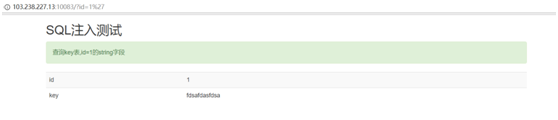
在试着用 /?id=2’ union select 1,database() %23按照之前的经验会注出数据库的名字
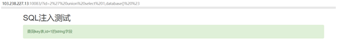
然而结果依然为空…
/?id=1’ and if(0>1,1,sleep(5)) %23 会让程序睡5秒
然而结果并没有
通过查阅发现，原来这是一个有防御的php程序，使用了一个addslashed()函数，这个函数的作用是对用户输入的预定义字符前面加入转义字符‘\’进行转义
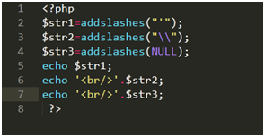
执行这个php程序
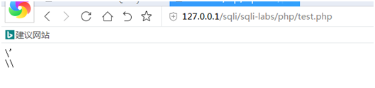
可见当我们输入’后，经过addslashed()函数将’转化成\’，就不再是一个单引号，从而避免了一般的注入，所以便产生了宽字节注入，其原理是当mysql使用gbk编码方式时，会将前两个字符看成一个汉字（当第一个字符ascii码大于128时（比如$df），才会达到汉字的范围），当我们输入单引号’时，mysql会调用转义函数将单引号变为\’，其中\的十六进制是%5c，mysql的GBK编码，会认为%df%5c是一个宽字节，也就是’ 運’，从而使单引号闭合（逃逸），进行注入攻击
当mysql接受客户端的数据后，会认为它的编码是character_set_client，然后将之转换成character_set_connection的编码，然后进入具体表和字段后，在转换成字段响应的编码，当查询结果产生后，会从表和字段的编码转换成character_set_results编码，返回给客户端
于是我们开始使用宽字节注入，发现开始报错了
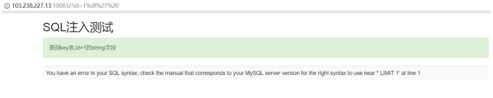
爆一下查询字段数量，发现是2
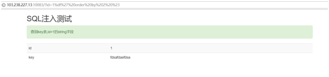
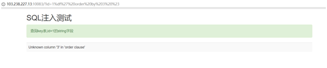
爆数据库，发现数据库名为sql5
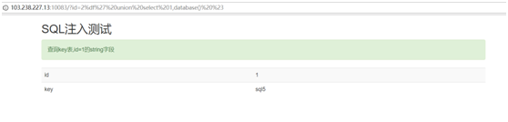
爆数据表，发现有key和test两个数据表
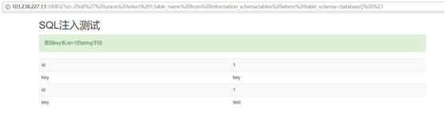
接下来爆列
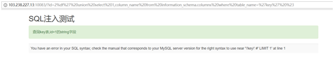
可以发现出现了问题，原来是mysql中的转义函数将’test’的两个单引号前面都加了\进行转义
因为题目有提示在key表的string字段下，于是查询
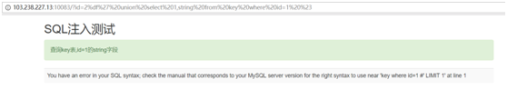
发现又出现了错误，查询后发现在用key替换key,或者用sql5.key，才能查询到结果
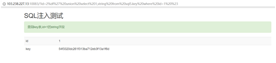